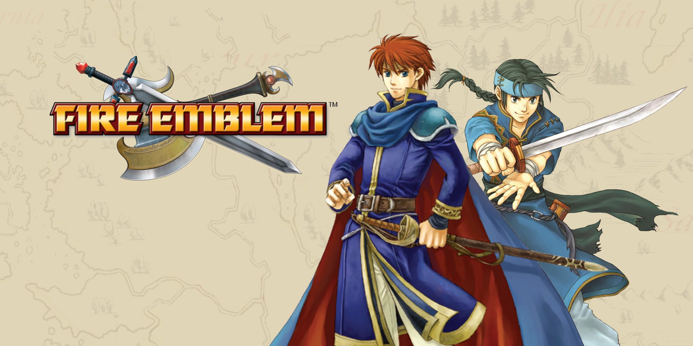

I first started playing videoGames when I was young. I initaly started Playing on the Nintendo 64 and a old computer that ran Windows 98 in the basment. That is were I found my love for videoGames and enjoed how they made me and my sisters closer. Now that I an trying to find a job im looing to try and start my own videoGame developmet firm. In doing so I am aming to make games that will bring people closer together, make them think about the world around them, and mostly to bring entertainment into the world.
| Fire Emblem |  |
| Pokemon | |